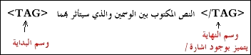

| مقدمة في لغة | ||
|
|
HTML |
إنها اللغة المستخدمة لإنشاء صفحات الإنترنت. (والكلمة إختصار لـ Hyper Text Markup Language). وهي ليست لغة برمجة بالمعنى والشكل المتعارف عليه للغات البرمجة الأخرى كلغة C . فهي مثلاً لا تحتوي على جمل التحكم والدوران، وعند الحاجة لاستخدام هذه الجمل يجب تضمين شيفرات من لغات أخرى كـ Java, JavaScript, CGI . كذلك فهي لا تحتاج إلى مترجم خاص به Compiler . وهي غير مرتبطة بنظام تشغيل معين، لأنه يتم تفسيرها وتنفيذ تعليماتها مباشرة من قبل متصفح الإنترنت وبغض النظر عن النظام المستخدم. لذلك فهي لغة بسيطة جداً، وسهلة الفهم والتعلم ولا تحتاج لمعرفة مسبقة بلغات البرمجة والهيكلية المستخدمة فيها. بل ربما كل ما تحتاجه هو القليل من التفكير المنطقي وترتيب الأفكار.
تتكون مفردات لغة Html من شيفرات تسمى TAGS أي الوسوم. وهي تستخدم بشكل أزواج وتكتب بالصيغة التالية (من اليسار إلى اليمين) :-

فعلى سبيل المثال الوسم <B> يستخدم لكتابة الكلمات بخط أسود عريض Bold وذلك بالشكل التالي:
<B> Text </B>
وهناك بعض الوسوم الخاصة التي تستخدم بصورة مفردة مثل وسم نهاية السطر <BR> أو قد تستخدم بكلتا الحالتين مثل وسم الفقرة <P>.
وسوف نناقش هذه الوسوم وغيرها بالتفصيل في حينه إن شاء الله
كيف نبدأ...
لا يتطلب كتابة ملف HTML أية برامج خاصة فهي كما قلنا لغة لا تحتوي على برنامج مترجم. بل نحتاج فقط إلى برنامج لتحرير النصوص البسيطة ومعالجتها، وبرنامج المفكرة الموجود في Windows يفي بهذا الغرض. وكذلك إلى أحد متصفحات الإنترنت Netscape Navigator أو MS Internet Explorer لمعاينة الصفحات التي نقوم بتصميمها. وعليك فقط أن نقوم بحفظ النص المكتوب بملف يحمل الاسم الممتد .html أو .htm
والجدير ذكره أنه يوجد العديد من البرامج التي تستخدم لإنشاء صفحات Html. دون الحاجة لمعرفة هذه اللغة حيث يقوم المستخدم من خلالها بكتابة الصفحات وتصميمها بما تحويه من نصوص ورسومات وجداول ثم يقوم البرنامج بتخليق الوسوم المناسبة وتحويل هذه الصفحات من وراء الكواليس تلقائياً وحفظها بتنسيق html. أي أن دور المستخدم ينحصر في الكتابة والتصميم فقط، دون معرفته للشيفرة التي استخدمت. وبالتالي عدم قدرته على التحكم بأي وسم أو تعديل الشيفرة حسب الحاجة، إلا من خلال إعادته للتصميم الأساسي ثم إعادة التحويل والحفظ من قبل البرنامج. وهذه الطريقة على سهولتها وسرعتها نسبياً، إلا أني لا أنصح باستخدامها لمن يريد معرفة هذه اللغة والتمكن منها.
قبل أن نبدأ
حسناً، لديك محرر نصوص ممتاز لكتابة ملفات HTML ولديك متصفح إنترنت لمعاينتها، ولديك هذه الدروس التي ستنطلق معها إلى عالم تصميم صفحات الويب. هل هذا يكفي؟ برأيي المتواضع، لا.
تحتاج دائماً وأبداً إلى تطبيق ما تتعلمه بصورة عملية أكثر من مجرد الأمثلة المدرجة في الدروس. ما رأيك في أن تفكر بموضوع ما يستهويك وتحب أن تتعاطى به؟ وتخيل أنك ستقوم بإنشاء موقع ويب عنه بصورة واقعية. ومع تقدمك في الدروس قم بتطبيق ما فيها على صفحاتك. ستجد الكثير من المتعة في هذا، وستسر جداً عندما ترى صفحتك تتبلور أمام عينيك يوماً بعد يوم، والأهم من هذا كله هو أنك ستكتشف أي ثغرات في استيعابك لهذه الدروس (وعندها من المؤكد أنك ستقوم بتلافيها) وقد تكتشف كذلك ثغرات ارتكبها كاتب هذه الدروس. (وفي هذه الحالة أرجو أن لا تتردد أبداً في الكتابة لي لكي أعمل على تلافيها).
والآن... لنبدأ
الدرس الأول : الأساسيات
تعريف ملف Html والوسوم الرئيسية فيه، إنشاء صفحة ويب بسيطة
تنسيق الصفحة، أضف لصفحتك بعض الحيوية باستخدام الألوان والخلفيات
التحكم بالخطوط في الصفحة، إختيار أنواعها وأحجامها وتنسيقاتها
قم بتنسيق وتنظيم صفحتك، واستخدم القوائم لترتيب بياناتك
إدراجها، التحكم بأحجامها وأبعادها. أنواع ملفات الصور في الويب
... كيف وصلت إلى هنا؟؟؟ بالنقر على وصلة تشعبية!
رتب بياناتك ضمن الجداول، وتحكم بشكل صفحتك بصورة فعالة
تابع مع الجداول، وتعرف على باقي الوسوم الخاصة بها
* أمثلة تطبيقية على الجداول
قسم صفحتك إلى إطارات أفقية أو عمودية أو الإثنين معاً ... لا فرق!
لا يكفي أن تدرج إطاراً في صفحتك، بل حدد خصائصه أيضاً
أدرجت إطاراً؟ فهل تأكدت من أنه يعمل بالشكل المطلوب...؟
بلا تعليق ... فالعنوان يكفي
صورة واحدة فقط ... وعدة وصلات تشعبية
تودّ أن تستطلع آراء زوارك!؟ ... عليك بالنماذج
تعدّدت الأشكال ... والنموذج واحدُ
الأرق الدائم لمصممي صفحات الويب
الويب ... بتتكلم عربي
كيف تجعلهم يجدون موقعك..؟!
داوم على زيارة هذه الصفحة. فسوف أقوم بإضافة درس جديد بصورة دورية
| إتش.بي بالعربية © 1998-1999 يحيى الشريف |
H.P in arabic © 1998-1999 Yahya Al-Sharif |